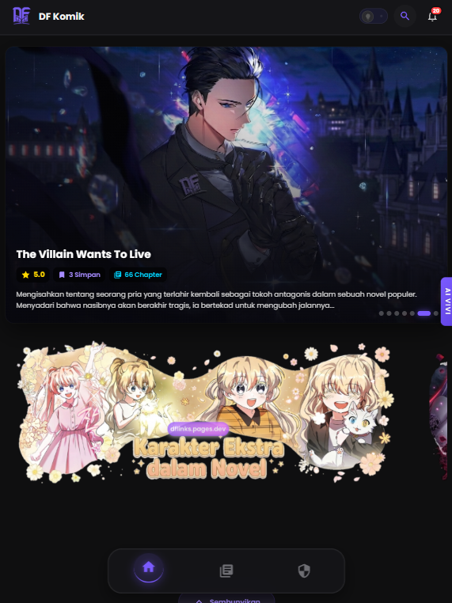

DF Komik
Platform Baca Manga
Web Development · PHP
Saya adalah seorang Web Developer dan UI Designer yang berfokus pada pengembangan website modern, aplikasi berbasis web, serta otomasi menggunakan API. Saya menikmati proses mengubah ide menjadi produk digital yang cepat, responsif, dan mudah digunakan.


Halo, saya David Firdaus, seorang mahasiswa Teknik Informatika sekaligus pengembang web yang memiliki ketertarikan besar pada teknologi, desain antarmuka, dan pengalaman pengguna.
Saya terbiasa membangun website menggunakan HTML, CSS, JavaScript, PHP, MySQL, dan Cloudflare. Selain mengembangkan aplikasi web, saya juga mengeksplorasi integrasi API, Telegram Bot, optimasi performa website, hingga deployment ke hosting.
Bagi saya, sebuah produk digital bukan hanya harus terlihat menarik, tetapi juga memiliki performa yang cepat, struktur kode yang rapi, serta mudah dikembangkan di masa depan.
Berikut adalah beberapa proyek yang saya kembangkan, mulai dari website, aplikasi berbasis web, sistem informasi, hingga eksperimen teknologi yang saya bangun sebagai media belajar maupun kebutuhan nyata.
"Teknologi terbaik adalah teknologi yang terasa sederhana bagi penggunanya."
Tertarik bekerja sama atau ingin berdiskusi mengenai proyek digital? Saya selalu terbuka untuk peluang baru, kolaborasi, maupun pengembangan produk berbasis web.
atau jelajahi arsip lengkapPilih suasana yang sesuai. Tarik tuas ke bawah untuk mode gelap, dorong ke atas untuk mode terang. Preferensi akan tersimpan secara otomatis.